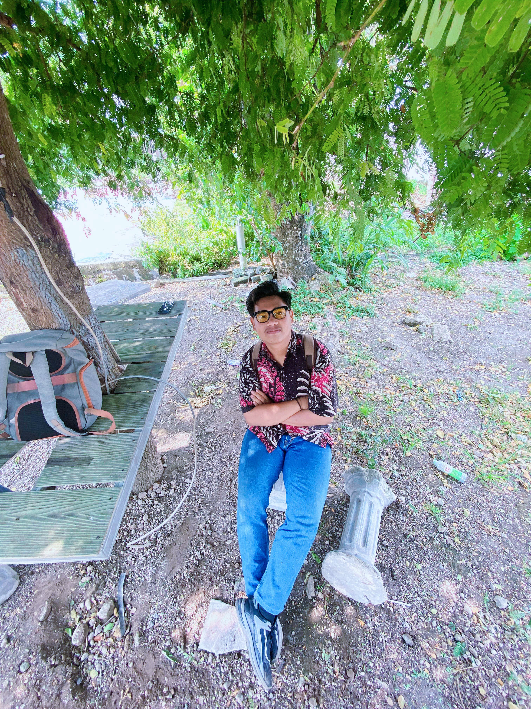

<!DOCTYPE html>
<html lang="en">
  <head>
    <meta charset="UTF-8" />
    <meta name="viewport" content="width=device-width, initial-scale=1.0" />
    <title>Desakuu</title>
    <link rel="stylesheet" href="assets/leaflet.css" />

    <style>
      body,
      html {
        padding: 0px;
        margin: 0px;
        height: 100%;
      }
      #map {
        height: 100%;
      }
    </style>
  </head>

  <body>
    <div id="map"></div>

    <script src="assets/leaflet.js"></script>
    <script src="assets/geojson/line_dakung.js"></script>

    <script>
      const map = L.map("map").setView([-8.7111953, 116.3446173], 13);

      const tiles = L.tileLayer(
        "https://tile.openstreetmap.org/{z}/{x}/{y}.png",
        {
          maxZoom: 19,
          attribution:
            '&copy; <a href="http://www.openstreetmap.org/copyright">OpenStreetMap</a>',
        }
      ).addTo(map);

      const popup = L.popup()
        .setLatLng([-8.716958, 116.338348])
        .setContent(
          ` <p>Ini wilayah desa Bombom</p>`
        )
        .openOn(map);

      L.geoJSON(jsonDkung, {
        style: function (feature) {
          return { color: "#9c02f5" };
        },
      }).addTo(map);
    </script>
  </body>
</html>
